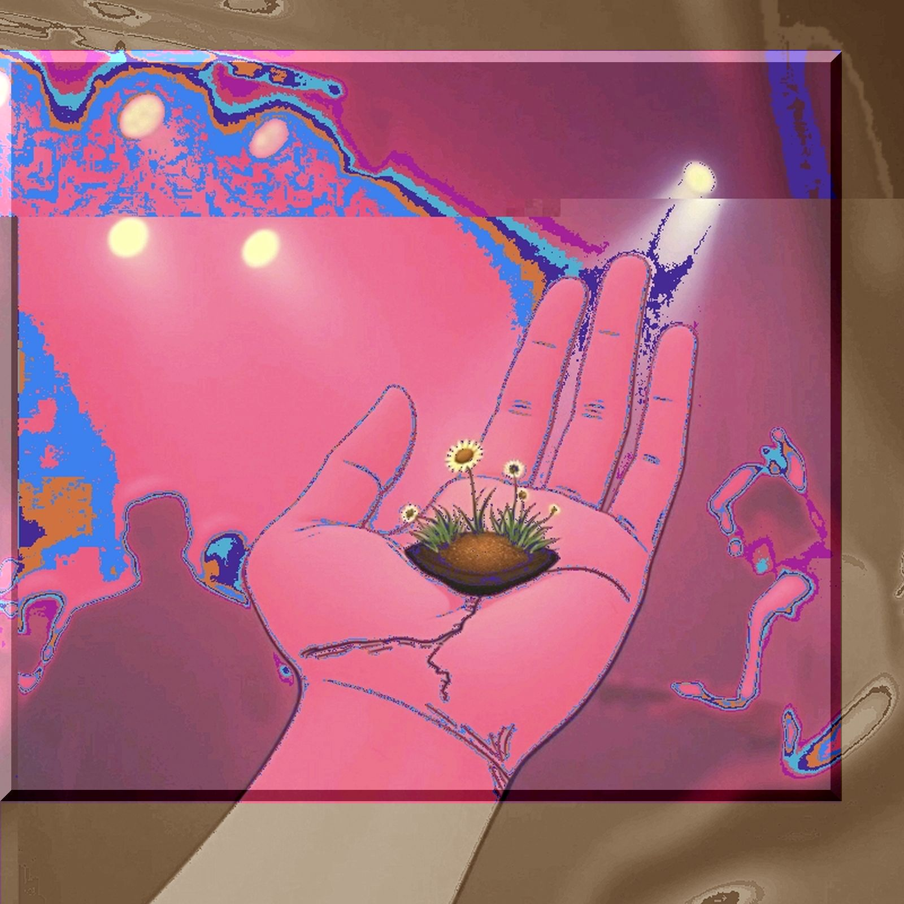

dragon on the palm
lyrics
たぶんエンドロール
すぐ そこにきてる
まだ目を逸らす
ふと たまによぎる
どんな気持ちで
僕はいればいいのか
また走り回る
そしてやっていける
まだ見ぬ嗜み
探す2本の指
ピンチアウトで
すこし拡大
drag and drop
drag and drop
落ちているからと ひろうものあれば
あとは野になる もののあはれ
手のひらサイズの楽園か
ちっぽけな箱庭でいいんだ
偽物でもいい 優しいからさ
つーか ホンモノってなんだ
まさかゴールドなんて
言ってないよな
再生ボタン押す
プレイじゃない
1,5倍速のチェリーピッキング
耐えれるかサーチ
いや 我慢比べか
壊れてしまうものと
無くしてしまうもの
いつだってちがう
いつだって間違う
苛立って 間違うし
交差点で すれ違う
drag and drop
drag and drop
落ちていくからと 見てるだけであれば
あとは好きにやる もののあはれ
手のひらで踊るダンス
やっと五本の指が見える
気づかなくてもそこにある
つーか なにを壊すってんだ
まさか壊せるなんて
思ってないよな
手のひらサイズの楽園か
ちっぽけな箱庭でいいんだ
そんなのでもいい そこにあるから
つーか ホンモノってなんだ
まさかロックだなんて
言ってないよな
notes
ケン・イシイの garden on the palm が出た頃には、まだスマホなんてなかったはずで。世界がこんなに手のひらに収まる未来をずっと前から鳴らしていたのかなと思った。
今では、大抵のことが本当に手のひらだ。スマホでも、マウスでも。拡大も縮小も、拾うことも捨てることも、指先ひとつでできてしまう。便利になったぶん、何を残して、何をゼロにしたのかはすぐに分からなくなったけど。
そういえば、Perfumeのパーフェクトスター・パーフェクトスタイルをはじめて聞いた頃に感じた未来は、とてつもなく広そうだった。これから訪れる近未来にワクワクしたんだと思う。でも世界は広がるどころか、小さくなり、より窮屈になった気がする。速さがこんなに窮屈だったとは。手が大きくなったはずではないのに。
手を伸ばしても、もう届かない。
いやその前に。ほんとの手のひらにさ、なんなら小さいドラゴンでも落ちてこないかな。
大きな物語が終わったとかいう人もいるけど、よくわからない。そもそも大きいと小さい、どっちが上なのだろうか。性能だって速さが全てではないのでは。カタログにはのらないモノでも僕らは選択をしている。それにスペックとか言われても想像力の方がたぶん手強い。
ところで「葛藤」とは、英語で言うとConflictなんだろうけど、葛も藤も絡まるだけで別に対立まではしてないのではないだろうか。ただ絡み合っただけ。煩悩即菩提。矛も盾も持つ。決着なんてつかないし。つけないままでいいならそれもいいと思う。